Is a file synchronization tool that allows you to keep files and folders in sync across multiple devices. It works by creating a shared folder on one device and adding other devices to the folder. Any changes made to the files in the folder on one device are automatically synced to all the other devices in the folder. Syncthing is free, open-source, and available for Windows, Linux, macOS, Android, and other platforms.
One of the key advantages of Syncthing is its security. It uses encryption to protect communication between devices, and all data remains on your own devices, rather than being stored in the cloud. Syncthing also supports versioning, so you can revert to a previous version of a file if needed, and has a user-friendly web interface that makes it easy to manage synchronization between devices.
To use Syncthing you need to have basic knowledge in Windows.
I will be covering:
- Sync between phone and computer.
- Silent automatic startup.
- Folder sharing permission.
To download syncthing use https://github.com/Bill-Stewart/SyncthingWindowsSetup/releases/, this is their official download link.
Running Syncthing.exe will open their web GUI 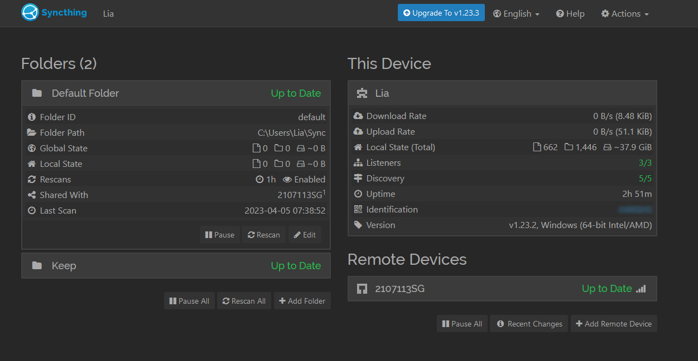
Please notice that even though you may have added a device, you will need to give it access to the shared folder you created.
- This allows you to have lots of devices while having complete control over which folder is shared with which devices.
First, you’d want to add your second device. 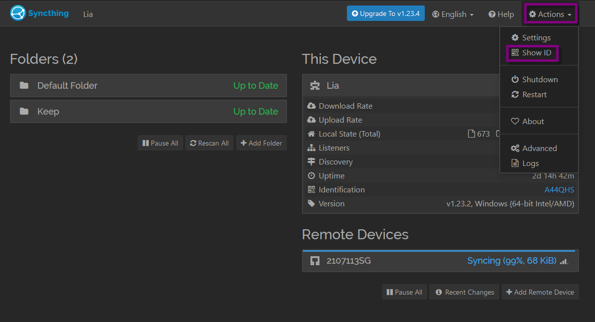
After that, press on 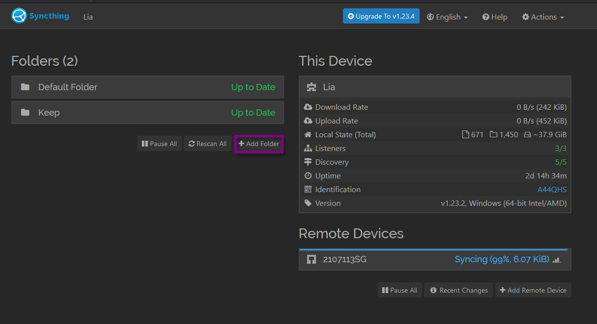 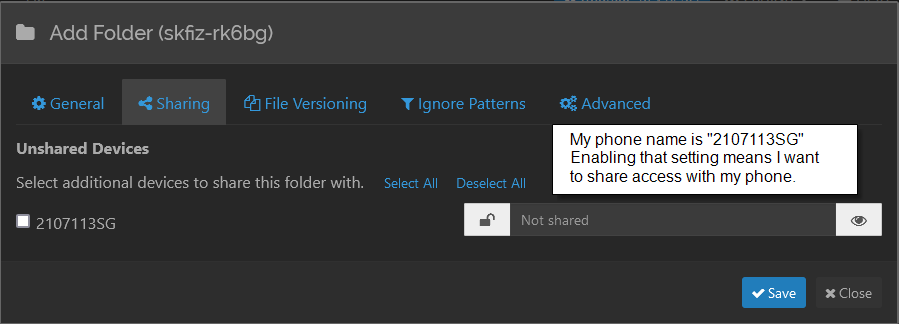
Good job!! Press on save and that’s it.
1. Now let’s start setting up silent autostart
- Open task schedule, either by searching for Task Schedule in Windows or using the
runcommand and typingtaskschd.msc - Click on
Create Task - Then click on
Run whether user is logged on or not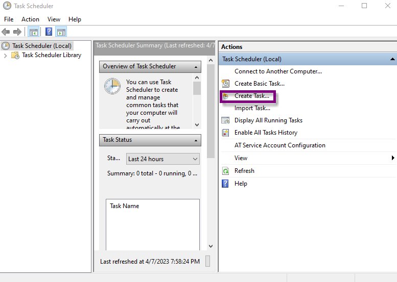 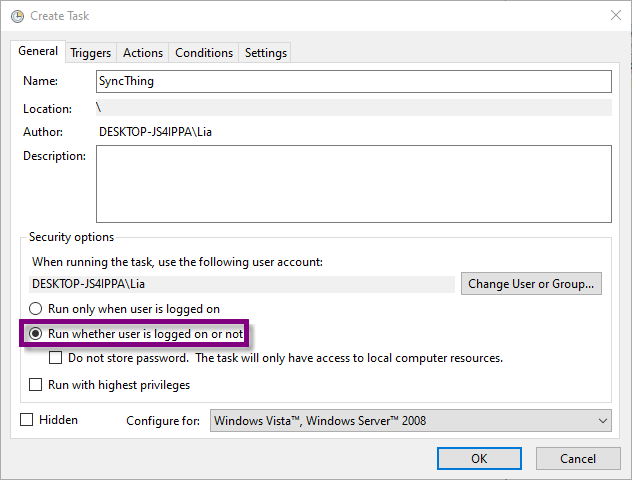
2. Press on Trigger tab
- Click on Begin the task and choose
At log onand choose your user - Click on Begin the task and choose
At startup/At system startup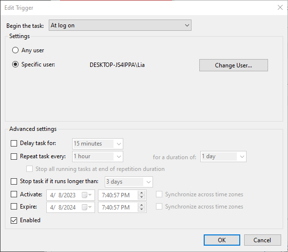 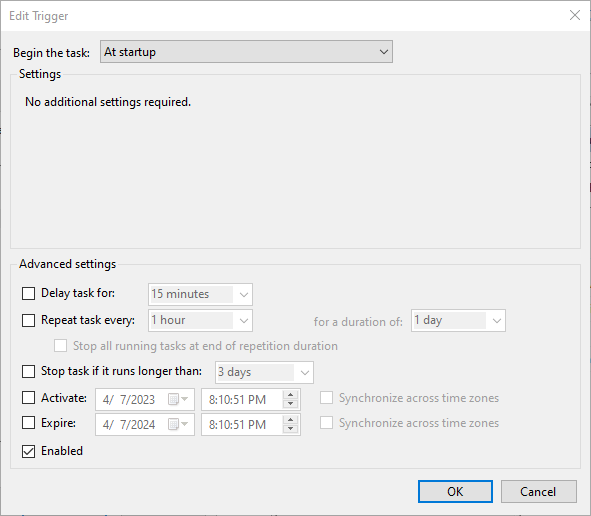
3. Go into Actions tab
- In
Actionleave it onStart a program - In
Program/Scriptenter the path to syncthing for me, itsC:\ProgramData\chocolatey\bin\syncthing.exe - This is optimal, but you can add
-no-consolefor no cmd console, and-no-browserfor no browser. 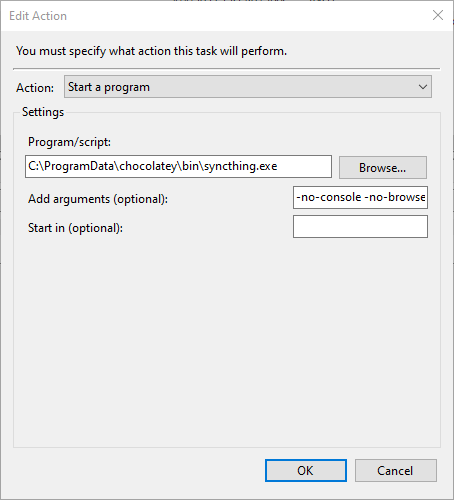
4. Go into Settings tab
- Disable
Stop the task if it runs longer than: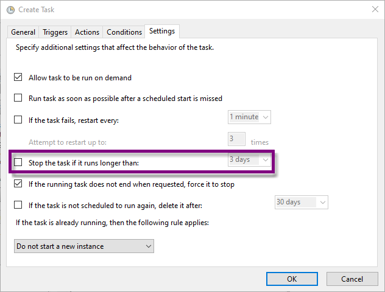
Good Job! :> You’ve set up automatic startup for SyncThing
Some Additional Settings
Let’s set up a shortcut link on the desktop that will do the same action
You can set up task schedule to automatically open the desktop link.
- Begin by creating a new shortcut
Right click on your desktop and > new > shortcut- Name the shortcut, the directory to your syncthing app, mine is
C:\ProgramData\chocolatey\bin\syncthing.exe -no-console -no-browseradd-no-console -no-browser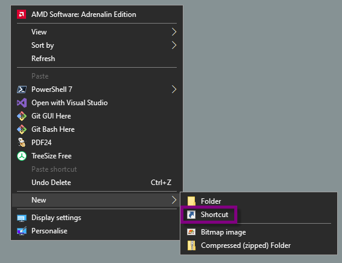 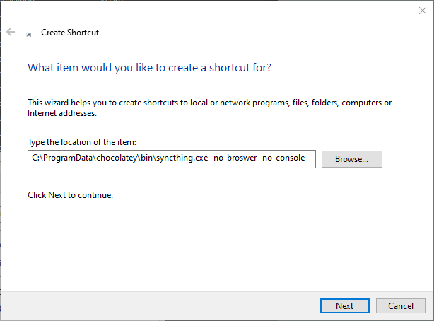
- Name the shortcut, the directory to your syncthing app, mine is
Syncthing also has file versioning
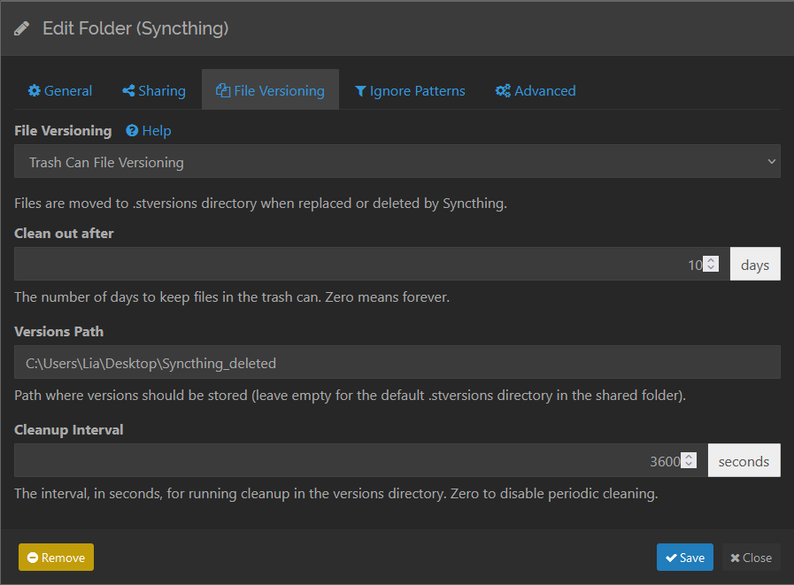
I will be covering more advanced syncthing features soon, for now, this setup will suffice for the average user.